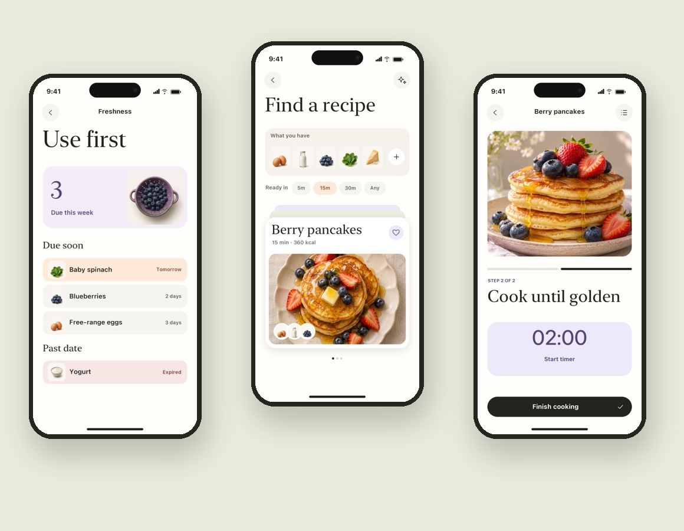
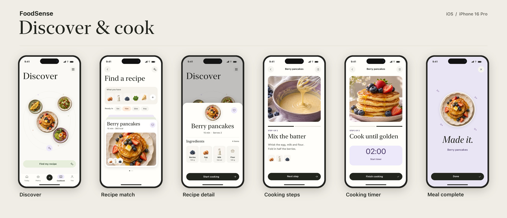

Review before saving
A sample scan proposes items. The cook chooses what to keep, and can add anything the scan misses.
Independent commissioned design · iOS
Make dinner with what is already in the fridge.
An AI-assisted kitchen concept for residents who share storage and cook on a budget. FoodSense makes it easier to confirm groceries, see what to use first, and choose a meal that fits.

The research inputs described food hidden behind other groceries and meal plans that changed under time pressure. I turned those observations into three decisions about where assistance matters.
A sample scan proposes items. The cook chooses what to keep, and can add anything the scan misses.
Use first surfaces near-date ingredients alongside specific meals that can use them.
Match cards expose ingredient coverage and time. Recipe details show missing items before cooking begins.
This prototype uses simulated fridge data and a fixed recipe catalogue. The hardware proposal describes the questions to resolve before a pilot.
